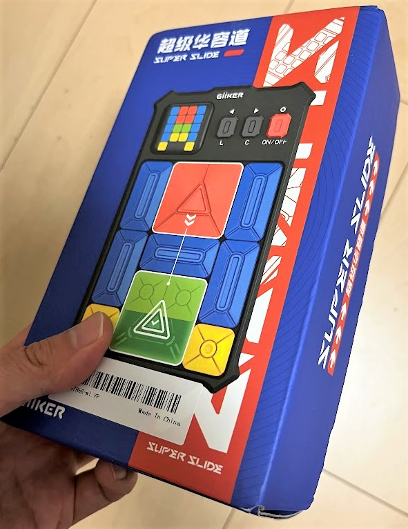
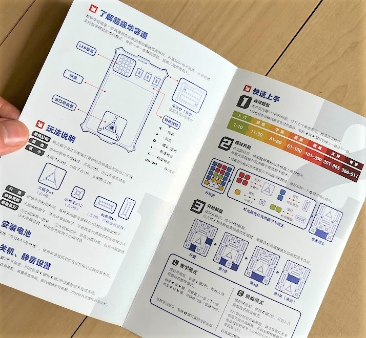
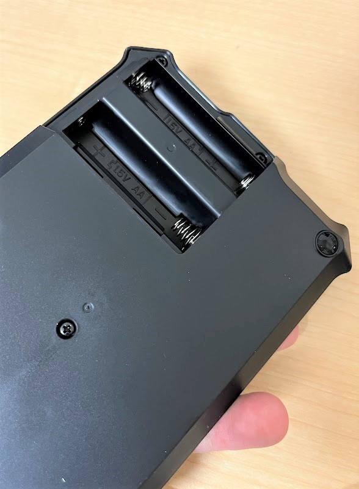
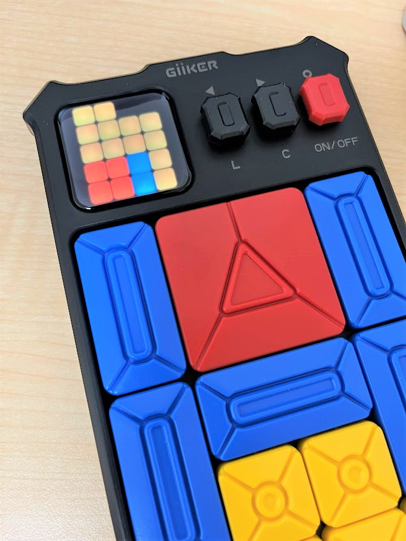

この記事はBanggoodの提供でお届けします。
以前紹介したようにこのブログはBanggoodと提携させていただいており、今回紹介するハイテクおもちゃ「物理箱入り娘」はBanggoodからいただいたものとなります。 （ハイテクおもちゃ「物理箱入り娘」のレビューがしたい！と言ったのは自分なので、Banggoodが無理やりMUSTOOL A008 デジタルマルチメータを押しているわけではなく、inajobの一押しアイテム！、という感じです。）
・・・ といういつもの前置きはそこそこに、ハイテクおもちゃ「物理箱入り娘」について紹介していきます。
そして、今回もこのブログのために2023/06/30まで利用できるクーポンを頂くことが出来たので、そちらも紹介します。
超級華容道？（SUPRE SLIDE）
いわゆる、ボードゲームの「箱入り娘」というゲームのハイテク版とも言えるおもちゃです。 旅館などに置いてあることもある、このボードゲーム、皆さんは御存知でしょうか？
一番大きな赤い正方形のブロックを下の真ん中の位置まで移動させる、スライド式のパズルゲームです。 初期配置を色々変更することで、様々な難易度で遊べる、頭の体操になるゲームです。
一般的な「箱入り娘」はいわゆる非電源のボードゲームですが、今回紹介するSUPRE SLIDEはこれをハイテク化したものです。

説明書は中国語のみ
このゲーム、説明書はついているものの中国語のみです。

まぁオリジナルの「箱入り娘」を知っているし、なんとなく漢字が読めるので、雰囲気で理解していきます。 （一応大学の第二外国語で中国語を取っていましたし・・・）
電源は単三電池2本
まずはセットアップです、裏蓋をあけて単三電池2本（別売り）を入れます（中国語だと5号電池、英語だとAAというようです）

ディスプレイと3つのボタン
この商品のトレードマークとも言えるのが、この左上のディスプレイです。
中身はどうやら4x5のフルカラーマトリクスLEDのようなのですが、ディスプレイを覆っているプラスチックの質感が高級な感じで、一見液晶ディスプレイのように見えます。
ディスプレイの右側には3つのボタンが並んでおり、このボタンでゲームを操作します。

ゲームの遊び方
ゲームを起動すると、ブロックの初期配置が画面に表示されます。
左、右ボタンでステージを選択し、ステージを決めたら、画面を参考に下のブロックを配置します（ここは手動です）
配置できたら○ボタンを押すことでゲームスタートです。
ブロックをスライドさせて大きな赤い四角のブロックを下段真ん中のゴール位置に移動させていきます。
下段真ん中のゴール位置に赤いブロックが移動されると、ゲーム機がそれを認識してクリアの音楽を鳴らしてくれます。
511もの膨大なステージ
ステージはなんと511もあります、クリアすると次のステージに自動的に切り替わりますが、左右ボタンで好きなステージを選ぶこともできます。（ただ511もあるので、ものすごい連打しないといけないのですが・・）
左右キーを押したあとに、画面に数字が出るので、それを見ることで今のステージ番号を知ることができます（が4x5の画面のため、数字は1つずつ順番に表示されます）
解説モード、タイムトライアルモード
このゲーム機は、各ステージの解法も知っています。ステージ選択画面で、Lボタンを長押することで解説モードに入ります。
解説モードでは左右のキーで解法を順番に見ることができます。どうしても解法がわからないときに使うと良いでしょう。
ステージ選択画面でCボタンを長押しすると、タイムトライアルモードになります。
このモードでは、クリアまでの時間を測定することができます。クリア下かどうかをゲーム機が認識できるので、正確な測定ができます。
感想
購入前は、すべてのブロックの位置をこのゲーム機が認識するのかと思っていましたが、そうではなく、ゴール判定のみできるようです。そのため、途中で一部のブロックを取り外してズルをする、などということもできてしまうので、その点は、期待外れでした。
ブロックは磁石でいい感じにステージに吸着しており、スライドさせるとスッスッと小気味よく滑ります。スマートフォンゲームでは味わえない物理的な感触が逆に新鮮でした。
説明書には、このゲームとルールの同じゲームのスマートフォン版のリンクが紹介されており、そちらも遊んでみましたが、断然この物理版のほうが遊んでいて楽しかったです。物理の良さを思い知らされました。
そこまで細かい部品もなく、尖った部分もないので、子供に遊ばせるおもちゃとしても良いものだと感じました。（ブロックを口に入れるような小さな子には向かなそうです、説明書には対象年齢は6歳以上と記載されていました。）
クーポンコード！
さて、ここまで紹介してきた ハイテクおもちゃ「物理箱入り娘」ですが、Banggoodでは $36.99で販売しています。このブログのために**$25.99**へ値下げできるクーポンコードを用意してくれました。
さて、ここまで紹介してきたハイテクおもちゃ「物理箱入り娘」ですが、今回Banggoodの提供という事で、$29.59で購入できるクーポンを頂いています。
コード： BGc90ab3
ハイテクおもちゃ「物理箱入り娘」をカートに入れ、チェックアウト後にこのクーポンコードを入力することで割引を受けることが出来ます。
有効期限は2023/06/30なので、買いたい方はお早めにどうぞ！（加えて、在庫に限りがあると思うのでお早目に！）


関連記事